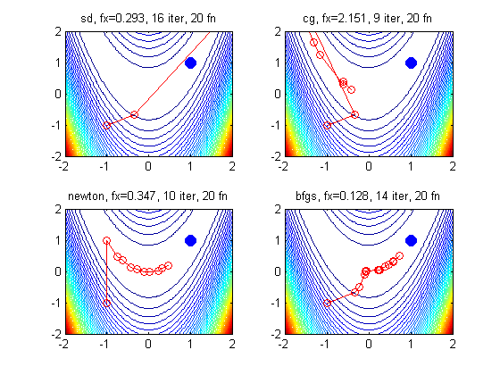

Minfunc Rosen Demo
function demoMinfunc()
figure;
methods = {'sd', 'cg', 'newton', 'bfgs'};
[nr nc] = nsubplots(length(methods));
for i=1:length(methods)
subplot(nr,nc,i);
helper(methods{i});
end
printPmtkFigure minfuncRosen2d
end
function helper(method)
if 1
f = @rosen2d;
[x1,x2] = meshgrid(-2:.05:2);
maxIter = 20;
x0 = [-1;-1];
else
f = @aokiFn;
[x1 x2] = meshgrid(0:0.1:2, -0.5:0.1:3);
x0 = [0; 0];
maxIter = 10;
end
Z = f([x1(:), x2(:)]);
Z = reshape(Z, size(x1));
contour(x1,x2,Z,50)
hold on
h=plot(1,1,'bo'); set(h,'markersize',10,'markerfacecolor','b');
global xhist
xhist = [];
options = [];
options.display = 'none';
options.maxFunEvals = maxIter;
options.outputFcn = @optimstore;
options.Method = method;
[x, fx, exitflag, output] = minFunc(f,x0,options);
hold on;
plot(xhist(1,:), xhist(2,:), 'ro-');
title(sprintf('%s, fx=%5.3f, %d iter, %d fn', ...
options.Method, fx, output.iterations, output.funcCount))
end
